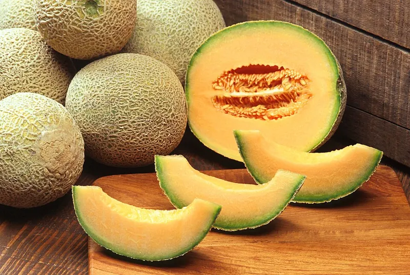

Melon (Cucumis melo) is an annual in the cucurbits.
Also called Cantaloupe, Muskmelon.

C. melo spans cantaloupe, honeydew and more by cultivar. Photo: USDA photo by Scott Bauer. Image Number K7355-11. · Public domain, via Wikimedia Commons.
Every number above carries a confidence tier. These are the ones the corpus does not stand behind — estimated from general knowledge, or contested between sources. They are shown because hiding them would be the dishonest half of showing the rest.
Do not plant cucurbits in ground that held cucurbits within 2-3 years.
costly if ignored → warn
Mechanism: Melittia cucurbitae overwinters as a pupa in the soil where its host grew and emerges the next summer; Anasa tristis overwinters as an adult in sheltered sites (plant debris, under boards or rocks) and flies to cucurbits in spring. A host-free break cuts local carryover, but both are strong fliers that re-invade from a distance, so rotation is only partial and works best paired with fall sanitation (destroy spent vines).
Evidence: confirmed against 3 sources in the research-based literature.
the 3 sources
UMN Extension, 'Squash vine borers', extension.umn.edu/yard-and-garden-insects/squash-vine-borers (read 2026-07-11): 'squash vine borers spend the winter in the soil near their host plants ... Practice rotation ... planting cucurbits in different areas of your garden if possible, or alternate seasons'; 'rotate away from the area and destroy crop residue.'
Ohioline (Ohio State Univ.), 'Squash Vine Borer', ohioline.osu.edu/factsheet/ent-0106 (read 2026-07-11): 'Crop rotation away from previously infested fields helps reduce local populations, as overwintering pupae remain in the soil. However ... fields often need to be rotated more than 5 miles away as SVB can fly into fields from long distances.'
UMN Extension, 'Squash bugs', extension.umn.edu/yard-and-garden-insects/squash-bugs (read 2026-07-11): 'Squash bugs can live through the winter as adults in sheltered places, such as under plant debris, around buildings, or under rocks. When adults come out in the spring, they fly to growing cucurbit plants.'
remedy
Plant cucurbits in different ground, or wait 3 years. Destroy the spent vines in autumn and clear debris and boards nearby — the pupae overwinter in the soil where the crop grew, the adults in the shelter around it. Rotation is only partial; both pests fly in from a distance.
A specialist pest or pathogen finds and builds on a continuous single-family host patch more readily than one broken by non-host families.
suboptimal if ignored → advise
Mechanism: Resource concentration - a specialist locates and holds its host more efficiently at higher host density and continuity, so an unbroken run of one family across adjacent beds is an easier target than the same family separated by a non-host (associational resistance).
Evidence: confirmed against 2 sources in the research-based literature.
the 2 sources
Root 1973, 'Organization of a plant-arthropod association in simple and diverse habitats: the fauna of collards (Brassica oleracea)', Ecological Monographs 43:95-124 (abstract read by the maintainer 2026-08-21): proposes 'the resource concentration hypothesis, which states that herbivores are more likely to find and remain on hosts that are growing in dense or nearly pure stands; that the most specialized species frequently attain higher relative densities in simple environments.' This is another rule here's claim and mechanism verbatim.
Elmstrom, Andow & Barclay 1988, 'Flea beetle movement in a broccoli monoculture and diculture', Environmental Entomology 17(2):299-305 (read by the maintainer 2026-08-21): the empirical test on a brassica specialist (the flea beetle Phyllotreta cruciferae) - immigration ~1.3x faster into monocultures than into dicultures, emigration ~2x faster from dicultures - reported as 'strong, direct support for the hypothesis that host plants are harder to find and easier to lose in vegetationally diverse habitats than in monocultures.'
remedy
Where one family fills adjacent beds in a single season, breaking the run with a non-host family between them lengthens the distance the specialist must travel to the next host. Disclosed, never docked: a continuous single-family block can be the right call anyway - a wind-pollinated crop like corn sets better massed - so the app names the trade-off and leaves the choice to the gardener.
Cold-hardy annuals can be sown or transplanted before the last spring frost — hardy crops about three weeks before, half-hardy about two weeks before. Tender crops wait for the frost itself.
suboptimal if ignored → advise
Mechanism: Cold hardiness. Hardy crops tolerate hard frost and half-hardy crops tolerate light frost, so they can occupy the ground weeks before frost-tender crops are allowed in. The offset is measured from the last spring frost.
Evidence: confirmed against 4 sources in the research-based literature.
the 4 sources
University of Illinois Extension, 'Time Your Vegetable Plantings by Cold Hardiness' (2018-03-26), extension.illinois.edu/blogs/ilriverhort/2018-03-26-time-your-vegetable-plantings-cold-hardiness: very hardy vegetables 'withstand freezing temperatures and hard frosts without injury' (planted earliest in spring); frost-tolerant vegetables 'can withstand light frosts, but not freezing temperatures' (planted a couple of weeks later). LLM-summarised from a read of the page; it establishes the CATEGORIES but states no week offsets.
Colorado State Univ. Extension, GardenNotes #720, 'Vegetable Planting Guide', extension.colostate.edu/resource/vegetable-planting-guide (read 2026-07-25): hardy vegetables go in 'As early as 2-4 weeks before the date of the average last spring frost'; semi-hardy 'As early as 0-2 weeks before the date of the average last spring frost'; tender from seed 'around the date of the average last spring frost'; very tender 'Typically 2+ weeks after'. This is the source that states the offsets in weeks.
Where this rule sits in that range: hardy at 3 weeks is mid-range of CSU's 2-4. Half-hardy at 2 weeks is the EARLIEST EDGE of CSU's 0-2 - the most aggressive planting CSU sanctions, not the middle of it. The rule is inside published guidance at both ends, but it leans early on the half-hardy side and a gardener following it in a cold spring is taking that boundary.
Do not import an offset from another publication's hardiness scheme without checking the category names: CSU has no 'very hardy' tier, so a '4-6 weeks before frost' figure written against a four-tier scheme does not describe CSU's 'hardy'. Categories are not comparable across sources.
Long-season warm crops are started indoors several weeks before the last frost and set out after it — tomato and tomatillo about six weeks ahead, pepper and eggplant about eight. Basil, six.
suboptimal if ignored → advise
Mechanism: A frost-tender crop with a long days-to-maturity cannot mature if it is only direct-sown after the last frost — the frost-free window is too short. A head start under cover buys the weeks the season lacks; the seedling is set out only once frost has passed — the transplant date is still frost-gated.
Evidence: confirmed against 2 sources in the research-based literature.
the 2 sources
University of Minnesota Extension, 'Starting seeds indoors', extension.umn.edu/planting-and-growing-guides/starting-seeds-indoors: seed-starting chart gives tomato '5-6 weeks' and pepper and eggplant '9 weeks' before the outdoor planting date (warm crops set out after the last frost). Read 2026-07-19 (LLM-summarised); read by the maintainer 2026-07-25, which is the read that promoted this rule. Note what the corpus's per-crop values do with the sources: tomato 6 sits at the top of Minnesota's '5-6 weeks' and inside Illinois's '6-8'; pepper and eggplant 8 sit BELOW Minnesota's '9 weeks' and at the top of Illinois's '6-8'. They are a reconciliation of two published ranges, not a figure either source prints.
Another 108 rules in the corpus apply by situation rather than by species — rotation intervals, frost windows, sun, spacing and soil. Read the full evidence page.
A garden-planning corpus: every claim states its evidence grade and links its sources on the page. Cite it with the grade, and add the date you read it.